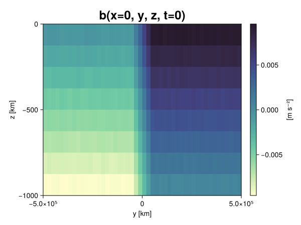
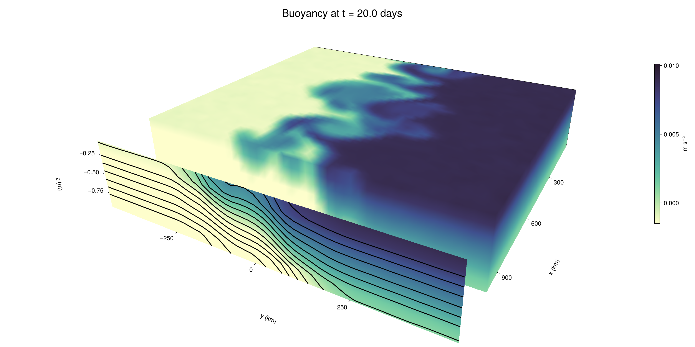

Baroclinic adjustment
In this example, we simulate the evolution and equilibration of a baroclinically unstable front.
Install dependencies
First let's make sure we have all required packages installed.
using Pkg
pkg"add Oceananigans, CairoMakie"using Oceananigans
using Oceananigans.UnitsGrid
We use a three-dimensional channel that is periodic in the x direction:
Lx = 1000kilometers # east-west extent [m]
Ly = 1000kilometers # north-south extent [m]
Lz = 1kilometers # depth [m]
grid = RectilinearGrid(size = (48, 48, 8),
x = (0, Lx),
y = (-Ly/2, Ly/2),
z = (-Lz, 0),
topology = (Periodic, Bounded, Bounded))48×48×8 RectilinearGrid{Float64, Periodic, Bounded, Bounded} on CPU with 3×3×3 halo
├── Periodic x ∈ [0.0, 1.0e6) regularly spaced with Δx=20833.3
├── Bounded y ∈ [-500000.0, 500000.0] regularly spaced with Δy=20833.3
└── Bounded z ∈ [-1000.0, 0.0] regularly spaced with Δz=125.0Model
We built a HydrostaticFreeSurfaceModel with an ImplicitFreeSurface solver. Regarding Coriolis, we use a beta-plane centered at 45° South.
model = HydrostaticFreeSurfaceModel(; grid,
coriolis = BetaPlane(latitude = -45),
buoyancy = BuoyancyTracer(),
tracers = :b,
momentum_advection = WENO(),
tracer_advection = WENO())HydrostaticFreeSurfaceModel{CPU, RectilinearGrid}(time = 0 seconds, iteration = 0)
├── grid: 48×48×8 RectilinearGrid{Float64, Periodic, Bounded, Bounded} on CPU with 3×3×3 halo
├── timestepper: QuasiAdamsBashforth2TimeStepper
├── tracers: b
├── closure: Nothing
├── buoyancy: BuoyancyTracer with ĝ = NegativeZDirection()
├── free surface: ImplicitFreeSurface with gravitational acceleration 9.80665 m s⁻²
│ └── solver: FFTImplicitFreeSurfaceSolver
├── advection scheme:
│ ├── momentum: WENO(order=5)
│ └── b: WENO(order=5)
└── coriolis: BetaPlane{Float64}We start our simulation from rest with a baroclinically unstable buoyancy distribution. We use ramp(y, Δy), defined below, to specify a front with width Δy and horizontal buoyancy gradient M². We impose the front on top of a vertical buoyancy gradient N² and a bit of noise.
"""
ramp(y, Δy)
Linear ramp from 0 to 1 between -Δy/2 and +Δy/2.
For example:
```
y < -Δy/2 => ramp = 0
-Δy/2 < y < -Δy/2 => ramp = y / Δy
y > Δy/2 => ramp = 1
```
"""
ramp(y, Δy) = min(max(0, y/Δy + 1/2), 1)
N² = 1e-5 # [s⁻²] buoyancy frequency / stratification
M² = 1e-7 # [s⁻²] horizontal buoyancy gradient
Δy = 100kilometers # width of the region of the front
Δb = Δy * M² # buoyancy jump associated with the front
ϵb = 1e-2 * Δb # noise amplitude
bᵢ(x, y, z) = N² * z + Δb * ramp(y, Δy) + ϵb * randn()
set!(model, b=bᵢ)Let's visualize the initial buoyancy distribution.
using CairoMakie
# Build coordinates with units of kilometers
x, y, z = 1e-3 .* nodes(grid, (Center(), Center(), Center()))
b = model.tracers.b
fig, ax, hm = heatmap(view(b, 1, :, :),
colormap = :deep,
axis = (xlabel = "y [km]",
ylabel = "z [km]",
title = "b(x=0, y, z, t=0)",
titlesize = 24))
Colorbar(fig[1, 2], hm, label = "[m s⁻²]")
fig
Simulation
Now let's build a Simulation.
simulation = Simulation(model, Δt=20minutes, stop_time=20days)Simulation of HydrostaticFreeSurfaceModel{CPU, RectilinearGrid}(time = 0 seconds, iteration = 0)
├── Next time step: 20 minutes
├── Elapsed wall time: 0 seconds
├── Wall time per iteration: NaN days
├── Stop time: 20 days
├── Stop iteration: Inf
├── Wall time limit: Inf
├── Minimum relative step: 0.0
├── Callbacks: OrderedDict with 4 entries:
│ ├── stop_time_exceeded => Callback of stop_time_exceeded on IterationInterval(1)
│ ├── stop_iteration_exceeded => Callback of stop_iteration_exceeded on IterationInterval(1)
│ ├── wall_time_limit_exceeded => Callback of wall_time_limit_exceeded on IterationInterval(1)
│ └── nan_checker => Callback of NaNChecker for u on IterationInterval(100)
├── Output writers: OrderedDict with no entries
└── Diagnostics: OrderedDict with no entriesWe add a TimeStepWizard callback to adapt the simulation's time-step,
conjure_time_step_wizard!(simulation, IterationInterval(20), cfl=0.2, max_Δt=20minutes)Also, we add a callback to print a message about how the simulation is going,
using Printf
wall_clock = Ref(time_ns())
function print_progress(sim)
u, v, w = model.velocities
progress = 100 * (time(sim) / sim.stop_time)
elapsed = (time_ns() - wall_clock[]) / 1e9
@printf("[%05.2f%%] i: %d, t: %s, wall time: %s, max(u): (%6.3e, %6.3e, %6.3e) m/s, next Δt: %s\n",
progress, iteration(sim), prettytime(sim), prettytime(elapsed),
maximum(abs, u), maximum(abs, v), maximum(abs, w), prettytime(sim.Δt))
wall_clock[] = time_ns()
return nothing
end
add_callback!(simulation, print_progress, IterationInterval(100))Diagnostics/Output
Here, we save the buoyancy, $b$, at the edges of our domain as well as the zonal ($x$) average of buoyancy.
u, v, w = model.velocities
ζ = ∂x(v) - ∂y(u)
B = Average(b, dims=1)
U = Average(u, dims=1)
V = Average(v, dims=1)
filename = "baroclinic_adjustment"
save_fields_interval = 0.5day
slicers = (east = (grid.Nx, :, :),
north = (:, grid.Ny, :),
bottom = (:, :, 1),
top = (:, :, grid.Nz))
for side in keys(slicers)
indices = slicers[side]
simulation.output_writers[side] = JLD2OutputWriter(model, (; b, ζ);
filename = filename * "_$(side)_slice",
schedule = TimeInterval(save_fields_interval),
overwrite_existing = true,
indices)
end
simulation.output_writers[:zonal] = JLD2OutputWriter(model, (; b=B, u=U, v=V);
filename = filename * "_zonal_average",
schedule = TimeInterval(save_fields_interval),
overwrite_existing = true)JLD2OutputWriter scheduled on TimeInterval(12 hours):
├── filepath: baroclinic_adjustment_zonal_average.jld2
├── 3 outputs: (b, u, v)
├── array type: Array{Float32}
├── including: [:grid, :coriolis, :buoyancy, :closure]
├── file_splitting: NoFileSplitting
└── file size: 32.5 KiBNow we're ready to run.
@info "Running the simulation..."
run!(simulation)
@info "Simulation completed in " * prettytime(simulation.run_wall_time)[ Info: Running the simulation...
[ Info: Initializing simulation...
[00.00%] i: 0, t: 0 seconds, wall time: 40.255 seconds, max(u): (0.000e+00, 0.000e+00, 0.000e+00) m/s, next Δt: 20 minutes
[ Info: ... simulation initialization complete (36.513 seconds)
[ Info: Executing initial time step...
[ Info: ... initial time step complete (26.711 seconds).
[06.94%] i: 100, t: 1.389 days, wall time: 50.033 seconds, max(u): (1.362e-01, 1.228e-01, 1.598e-03) m/s, next Δt: 20 minutes
[13.89%] i: 200, t: 2.778 days, wall time: 981.740 ms, max(u): (2.207e-01, 1.817e-01, 1.768e-03) m/s, next Δt: 20 minutes
[20.83%] i: 300, t: 4.167 days, wall time: 943.387 ms, max(u): (2.974e-01, 2.395e-01, 1.852e-03) m/s, next Δt: 20 minutes
[27.78%] i: 400, t: 5.556 days, wall time: 876.463 ms, max(u): (3.802e-01, 2.894e-01, 1.910e-03) m/s, next Δt: 20 minutes
[34.72%] i: 500, t: 6.944 days, wall time: 965.535 ms, max(u): (4.777e-01, 3.495e-01, 1.893e-03) m/s, next Δt: 20 minutes
[41.67%] i: 600, t: 8.333 days, wall time: 978.074 ms, max(u): (6.001e-01, 5.377e-01, 1.937e-03) m/s, next Δt: 20 minutes
[48.61%] i: 700, t: 9.722 days, wall time: 1.241 seconds, max(u): (8.071e-01, 9.707e-01, 2.452e-03) m/s, next Δt: 20 minutes
[55.56%] i: 800, t: 11.111 days, wall time: 1.116 seconds, max(u): (1.093e+00, 1.352e+00, 4.218e-03) m/s, next Δt: 20 minutes
[62.50%] i: 900, t: 12.500 days, wall time: 930.605 ms, max(u): (1.330e+00, 1.275e+00, 5.032e-03) m/s, next Δt: 20 minutes
[69.44%] i: 1000, t: 13.889 days, wall time: 924.612 ms, max(u): (1.451e+00, 1.304e+00, 4.573e-03) m/s, next Δt: 20 minutes
[76.39%] i: 1100, t: 15.278 days, wall time: 999.449 ms, max(u): (1.475e+00, 1.253e+00, 3.414e-03) m/s, next Δt: 20 minutes
[83.33%] i: 1200, t: 16.667 days, wall time: 959.886 ms, max(u): (1.441e+00, 1.263e+00, 2.943e-03) m/s, next Δt: 20 minutes
[90.28%] i: 1300, t: 18.056 days, wall time: 875.963 ms, max(u): (1.431e+00, 1.163e+00, 3.293e-03) m/s, next Δt: 20 minutes
[97.22%] i: 1400, t: 19.444 days, wall time: 964.977 ms, max(u): (1.419e+00, 1.245e+00, 2.859e-03) m/s, next Δt: 20 minutes
[ Info: Simulation is stopping after running for 0 seconds.
[ Info: Simulation time 20 days equals or exceeds stop time 20 days.
[ Info: Simulation completed in 1.347 minutes
Visualization
All that's left is to make a pretty movie. Actually, we make two visualizations here. First, we illustrate how to make a 3D visualization with Makie's Axis3 and Makie.surface. Then we make a movie in 2D. We use CairoMakie in this example, but note that using GLMakie is more convenient on a system with OpenGL, as figures will be displayed on the screen.
using CairoMakieThree-dimensional visualization
We load the saved buoyancy output on the top, north, and east surface as FieldTimeSerieses.
filename = "baroclinic_adjustment"
sides = keys(slicers)
slice_filenames = NamedTuple(side => filename * "_$(side)_slice.jld2" for side in sides)
b_timeserieses = (east = FieldTimeSeries(slice_filenames.east, "b"),
north = FieldTimeSeries(slice_filenames.north, "b"),
top = FieldTimeSeries(slice_filenames.top, "b"))
B_timeseries = FieldTimeSeries(filename * "_zonal_average.jld2", "b")
times = B_timeseries.times
grid = B_timeseries.grid48×48×8 RectilinearGrid{Float64, Periodic, Bounded, Bounded} on CPU with 3×3×3 halo
├── Periodic x ∈ [0.0, 1.0e6) regularly spaced with Δx=20833.3
├── Bounded y ∈ [-500000.0, 500000.0] regularly spaced with Δy=20833.3
└── Bounded z ∈ [-1000.0, 0.0] regularly spaced with Δz=125.0We build the coordinates. We rescale horizontal coordinates to kilometers.
xb, yb, zb = nodes(b_timeserieses.east)
xb = xb ./ 1e3 # convert m -> km
yb = yb ./ 1e3 # convert m -> km
Nx, Ny, Nz = size(grid)
x_xz = repeat(x, 1, Nz)
y_xz_north = y[end] * ones(Nx, Nz)
z_xz = repeat(reshape(z, 1, Nz), Nx, 1)
x_yz_east = x[end] * ones(Ny, Nz)
y_yz = repeat(y, 1, Nz)
z_yz = repeat(reshape(z, 1, Nz), grid.Ny, 1)
x_xy = x
y_xy = y
z_xy_top = z[end] * ones(grid.Nx, grid.Ny)Then we create a 3D axis. We use zonal_slice_displacement to control where the plot of the instantaneous zonal average flow is located.
fig = Figure(size = (1600, 800))
zonal_slice_displacement = 1.2
ax = Axis3(fig[2, 1],
aspect=(1, 1, 1/5),
xlabel = "x (km)",
ylabel = "y (km)",
zlabel = "z (m)",
xlabeloffset = 100,
ylabeloffset = 100,
zlabeloffset = 100,
limits = ((x[1], zonal_slice_displacement * x[end]), (y[1], y[end]), (z[1], z[end])),
elevation = 0.45,
azimuth = 6.8,
xspinesvisible = false,
zgridvisible = false,
protrusions = 40,
perspectiveness = 0.7)Axis3()We use data from the final savepoint for the 3D plot. Note that this plot can easily be animated by using Makie's Observable. To dive into Observables, check out Makie.jl's Documentation.
n = length(times)41Now let's make a 3D plot of the buoyancy and in front of it we'll use the zonally-averaged output to plot the instantaneous zonal-average of the buoyancy.
b_slices = (east = interior(b_timeserieses.east[n], 1, :, :),
north = interior(b_timeserieses.north[n], :, 1, :),
top = interior(b_timeserieses.top[n], :, :, 1))
# Zonally-averaged buoyancy
B = interior(B_timeseries[n], 1, :, :)
clims = 1.1 .* extrema(b_timeserieses.top[n][:])
kwargs = (colorrange=clims, colormap=:deep, shading=NoShading)
surface!(ax, x_yz_east, y_yz, z_yz; color = b_slices.east, kwargs...)
surface!(ax, x_xz, y_xz_north, z_xz; color = b_slices.north, kwargs...)
surface!(ax, x_xy, y_xy, z_xy_top; color = b_slices.top, kwargs...)
sf = surface!(ax, zonal_slice_displacement .* x_yz_east, y_yz, z_yz; color = B, kwargs...)
contour!(ax, y, z, B; transformation = (:yz, zonal_slice_displacement * x[end]),
levels = 15, linewidth = 2, color = :black)
Colorbar(fig[2, 2], sf, label = "m s⁻²", height = Relative(0.4), tellheight=false)
title = "Buoyancy at t = " * string(round(times[n] / day, digits=1)) * " days"
fig[1, 1:2] = Label(fig, title; fontsize = 24, tellwidth = false, padding = (0, 0, -120, 0))
rowgap!(fig.layout, 1, Relative(-0.2))
colgap!(fig.layout, 1, Relative(-0.1))
save("baroclinic_adjustment_3d.png", fig)
Two-dimensional movie
We make a 2D movie that shows buoyancy $b$ and vertical vorticity $ζ$ at the surface, as well as the zonally-averaged zonal and meridional velocities $U$ and $V$ in the $(y, z)$ plane. First we load the FieldTimeSeries and extract the additional coordinates we'll need for plotting
ζ_timeseries = FieldTimeSeries(slice_filenames.top, "ζ")
U_timeseries = FieldTimeSeries(filename * "_zonal_average.jld2", "u")
B_timeseries = FieldTimeSeries(filename * "_zonal_average.jld2", "b")
V_timeseries = FieldTimeSeries(filename * "_zonal_average.jld2", "v")
xζ, yζ, zζ = nodes(ζ_timeseries)
yv = ynodes(V_timeseries)
xζ = xζ ./ 1e3 # convert m -> km
yζ = yζ ./ 1e3 # convert m -> km
yv = yv ./ 1e3 # convert m -> km49-element Vector{Float64}:
-500.0
-479.1666666666667
-458.3333333333333
-437.5
-416.6666666666667
-395.8333333333333
-375.0
-354.1666666666667
-333.3333333333333
-312.5
-291.6666666666667
-270.8333333333333
-250.0
-229.16666666666666
-208.33333333333334
-187.5
-166.66666666666666
-145.83333333333334
-125.0
-104.16666666666667
-83.33333333333333
-62.5
-41.666666666666664
-20.833333333333332
0.0
20.833333333333332
41.666666666666664
62.5
83.33333333333333
104.16666666666667
125.0
145.83333333333334
166.66666666666666
187.5
208.33333333333334
229.16666666666666
250.0
270.8333333333333
291.6666666666667
312.5
333.3333333333333
354.1666666666667
375.0
395.8333333333333
416.6666666666667
437.5
458.3333333333333
479.1666666666667
500.0Next, we set up a plot with 4 panels. The top panels are large and square, while the bottom panels get a reduced aspect ratio through rowsize!.
set_theme!(Theme(fontsize=24))
fig = Figure(size=(1800, 1000))
axb = Axis(fig[1, 2], xlabel="x (km)", ylabel="y (km)", aspect=1)
axζ = Axis(fig[1, 3], xlabel="x (km)", ylabel="y (km)", aspect=1, yaxisposition=:right)
axu = Axis(fig[2, 2], xlabel="y (km)", ylabel="z (m)")
axv = Axis(fig[2, 3], xlabel="y (km)", ylabel="z (m)", yaxisposition=:right)
rowsize!(fig.layout, 2, Relative(0.3))To prepare a plot for animation, we index the timeseries with an Observable,
n = Observable(1)
b_top = @lift interior(b_timeserieses.top[$n], :, :, 1)
ζ_top = @lift interior(ζ_timeseries[$n], :, :, 1)
U = @lift interior(U_timeseries[$n], 1, :, :)
V = @lift interior(V_timeseries[$n], 1, :, :)
B = @lift interior(B_timeseries[$n], 1, :, :)Observable([-0.009356657974421978 -0.008141979575157166 -0.0068700178526341915 -0.005636757239699364 -0.0043721687979996204 -0.0031440637540072203 -0.001876111957244575 -0.0006311365286819637; -0.00939225684851408 -0.008119340054690838 -0.00686464412137866 -0.0056260074488818645 -0.004367410205304623 -0.0031260510440915823 -0.0018918730784207582 -0.0006173741421662271; -0.009349844418466091 -0.008135683834552765 -0.006883216556161642 -0.00562260439619422 -0.004379283171147108 -0.0031202444806694984 -0.0018755648052319884 -0.0005995372193865478; -0.009366994723677635 -0.008104247972369194 -0.006889364682137966 -0.005654240492731333 -0.0043881298042833805 -0.0031400895677506924 -0.0018549885135143995 -0.0006120770704001188; -0.009375172667205334 -0.008135185576975346 -0.006865139584988356 -0.005604751408100128 -0.0043720705434679985 -0.0031193059403449297 -0.001875641057267785 -0.0005978414556011558; -0.009362134151160717 -0.00814898032695055 -0.00687964865937829 -0.00562589056789875 -0.004359014797955751 -0.003117360407486558 -0.0018664543749764562 -0.0006211076397448778; -0.009376483038067818 -0.008113576099276543 -0.006863992661237717 -0.005632093176245689 -0.004377191886305809 -0.0031060990877449512 -0.0018971945391967893 -0.0006358727114275098; -0.009363001212477684 -0.008137686178088188 -0.006896359845995903 -0.00563395768404007 -0.004348590038716793 -0.003144703106954694 -0.0018623945070430636 -0.0006201089709065855; -0.00937940925359726 -0.008128833025693893 -0.006885685957968235 -0.0056219385005533695 -0.004358597565442324 -0.003116304986178875 -0.0018930963706225157 -0.000611836847383529; -0.009347462095320225 -0.008151765912771225 -0.006864211987704039 -0.005632931832224131 -0.004369229078292847 -0.003120605368167162 -0.0018840617267414927 -0.0006313682533800602; -0.009358576498925686 -0.008116035722196102 -0.006892595440149307 -0.005627794656902552 -0.004356496036052704 -0.0031327055767178535 -0.001890494953840971 -0.0006195959867909551; -0.009362523443996906 -0.00812749657779932 -0.006868040654808283 -0.00563058303669095 -0.004383631516247988 -0.0031239986419677734 -0.0018621780909597874 -0.0006246782140806317; -0.009383982978761196 -0.008125594817101955 -0.006864194292575121 -0.0056386967189610004 -0.004389885347336531 -0.003116434207186103 -0.0018570347456261516 -0.0006246155826374888; -0.009356054477393627 -0.008149031549692154 -0.006860644556581974 -0.005610255058854818 -0.004375325981527567 -0.003129926510155201 -0.0018828964093700051 -0.000647004519123584; -0.009374245069921017 -0.008112333714962006 -0.006889041047543287 -0.0056114946492016315 -0.004360581748187542 -0.0031244128476828337 -0.0018714809557422996 -0.0006315768114291131; -0.00937631819397211 -0.00814427062869072 -0.006881117820739746 -0.005613310262560844 -0.004366364795714617 -0.0031105750240385532 -0.0018764236010611057 -0.0006196476751938462; -0.00938231498003006 -0.00812810380011797 -0.0068443105556070805 -0.005634240340441465 -0.004365153610706329 -0.003134368918836117 -0.0018863463774323463 -0.0006384508451446891; -0.009359817020595074 -0.008127501234412193 -0.006863507907837629 -0.005632241256535053 -0.004367222543805838 -0.0031571737490594387 -0.0018598877359181643 -0.0006195604219101369; -0.009365580044686794 -0.008135351352393627 -0.006867538671940565 -0.005591301713138819 -0.004397237673401833 -0.0031362150330096483 -0.00188387930393219 -0.0006174332229420543; -0.009375549852848053 -0.008115570060908794 -0.00688482029363513 -0.005644345656037331 -0.004391767550259829 -0.0031242365948855877 -0.0018760362872853875 -0.0006306504365056753; -0.009341048076748848 -0.008132658898830414 -0.006890315096825361 -0.005640256684273481 -0.00436289282515645 -0.0031206628773361444 -0.0018508275970816612 -0.00064166693482548; -0.009373197332024574 -0.008124460466206074 -0.0068861641921103 -0.005650997627526522 -0.004398885648697615 -0.003129278775304556 -0.0018975160783156753 -0.0006387443863786757; -0.007526491302996874 -0.0062508354894816875 -0.005016139708459377 -0.0037351392675191164 -0.0024989410303533077 -0.0012523932382464409 -2.9416671623039292e-6 0.0012526363134384155; -0.005405995529145002 -0.004167180974036455 -0.002920314436778426 -0.0016683000139892101 -0.0004100833903066814 0.0008272313862107694 0.0020764637738466263 0.003327116835862398; -0.003340811002999544 -0.0021115390118211508 -0.0008208315121009946 0.0003953131672460586 0.0016691249329596758 0.0029085944406688213 0.004159559030085802 0.005410492420196533; -0.001235645147971809 -1.6848829545779154e-5 0.0012496518902480602 0.002491424325853586 0.003739924868568778 0.004987270105630159 0.006227266509085894 0.007511562202125788; 0.0006190298590809107 0.001891450840048492 0.00314684328623116 0.004373431205749512 0.0056452262215316296 0.006897505838423967 0.008101974613964558 0.00938168354332447; 0.0006287374999374151 0.0018547822255641222 0.0031345472671091557 0.004347280599176884 0.005636867135763168 0.006854604464024305 0.008119705133140087 0.0093699861317873; 0.000615237804595381 0.0018928366480395198 0.0031292918138206005 0.0043699168600142 0.005618162453174591 0.006889119278639555 0.00815054215490818 0.009360344149172306; 0.0006281104870140553 0.0018873924855142832 0.0031049728859215975 0.0043964390642941 0.00564249511808157 0.006870381999760866 0.008119605481624603 0.009400087408721447; 0.0006357948295772076 0.001874638139270246 0.0031291558407247066 0.004380698781460524 0.005598180927336216 0.006866202224045992 0.008127420209348202 0.009361364878714085; 0.0006224904209375381 0.0018863881705328822 0.0031288652680814266 0.00436376640573144 0.005606050603091717 0.00686649652197957 0.008106311783194542 0.009398171678185463; 0.0006354301585815847 0.0018917644629254937 0.003147383453324437 0.004397530108690262 0.005615799222141504 0.006883473135530949 0.008129840716719627 0.009351242333650589; 0.0006258658831939101 0.001898143789730966 0.003099670633673668 0.004382275976240635 0.005625133868306875 0.006876841187477112 0.008111764676868916 0.009357217699289322; 0.0006184899248182774 0.0018531986279413104 0.0031075479928404093 0.004392360802739859 0.00562153710052371 0.006896136794239283 0.008137252181768417 0.009382830001413822; 0.0006185703678056598 0.001886487822048366 0.003133852267637849 0.004381281323730946 0.0056091370061039925 0.0068643647246062756 0.008116181939840317 0.00936257652938366; 0.0006322121480479836 0.0018803428392857313 0.0031536396127194166 0.004381989594548941 0.005626030266284943 0.006898543797433376 0.008119129575788975 0.009365703910589218; 0.000621237326413393 0.0018786241998896003 0.0031074469443410635 0.0043768263421952724 0.005623440723866224 0.0068798670545220375 0.008117886260151863 0.009370976127684116; 0.0006070423987694085 0.0018763517728075385 0.0031486633233726025 0.004363644868135452 0.0056279911659657955 0.0069018141366541386 0.008123917505145073 0.009357182309031487; 0.0006227438570931554 0.0018805015133693814 0.003153989091515541 0.004383119288831949 0.005623717792332172 0.006861957721412182 0.008103336207568645 0.009381984360516071; 0.0006314408965408802 0.0018796573858708143 0.003115087514743209 0.0043973843567073345 0.005636229179799557 0.006874757818877697 0.008126131258904934 0.009366058744490147; 0.0006173745496198535 0.0018798852106556296 0.003110280027613044 0.004390706308186054 0.005643009673804045 0.006868386175483465 0.008108045905828476 0.009357469156384468; 0.0006420343997888267 0.001903238007798791 0.0031311819329857826 0.004357576370239258 0.005630269180983305 0.006868952419608831 0.008134530857205391 0.009374796412885189; 0.0006188583211041987 0.0018797741504386067 0.0031514083966612816 0.004373481497168541 0.005623181816190481 0.00686598289757967 0.008114791475236416 0.00935906171798706; 0.0005961693823337555 0.0018584239296615124 0.0031232256442308426 0.004372414201498032 0.005617701448500156 0.006860510446131229 0.008151723071932793 0.009398959577083588; 0.0005980784189887345 0.0018745288252830505 0.003119982313364744 0.004355413839221001 0.005638219881802797 0.006898130290210247 0.008121266961097717 0.009369720704853535; 0.0006246556295081973 0.0018606915837153792 0.003131650621071458 0.004375750664621592 0.0056195990182459354 0.006871310994029045 0.008122315630316734 0.009398522786796093; 0.0005991801153868437 0.0018890363862738013 0.0031191278249025345 0.00438192393630743 0.005608483217656612 0.006869986187666655 0.00811762548983097 0.00939400028437376])
and then build our plot:
hm = heatmap!(axb, xb, yb, b_top, colorrange=(0, Δb), colormap=:thermal)
Colorbar(fig[1, 1], hm, flipaxis=false, label="Surface b(x, y) (m s⁻²)")
hm = heatmap!(axζ, xζ, yζ, ζ_top, colorrange=(-5e-5, 5e-5), colormap=:balance)
Colorbar(fig[1, 4], hm, label="Surface ζ(x, y) (s⁻¹)")
hm = heatmap!(axu, yb, zb, U; colorrange=(-5e-1, 5e-1), colormap=:balance)
Colorbar(fig[2, 1], hm, flipaxis=false, label="Zonally-averaged U(y, z) (m s⁻¹)")
contour!(axu, yb, zb, B; levels=15, color=:black)
hm = heatmap!(axv, yv, zb, V; colorrange=(-1e-1, 1e-1), colormap=:balance)
Colorbar(fig[2, 4], hm, label="Zonally-averaged V(y, z) (m s⁻¹)")
contour!(axv, yb, zb, B; levels=15, color=:black)Finally, we're ready to record the movie.
frames = 1:length(times)
record(fig, filename * ".mp4", frames, framerate=8) do i
n[] = i
endThis page was generated using Literate.jl.